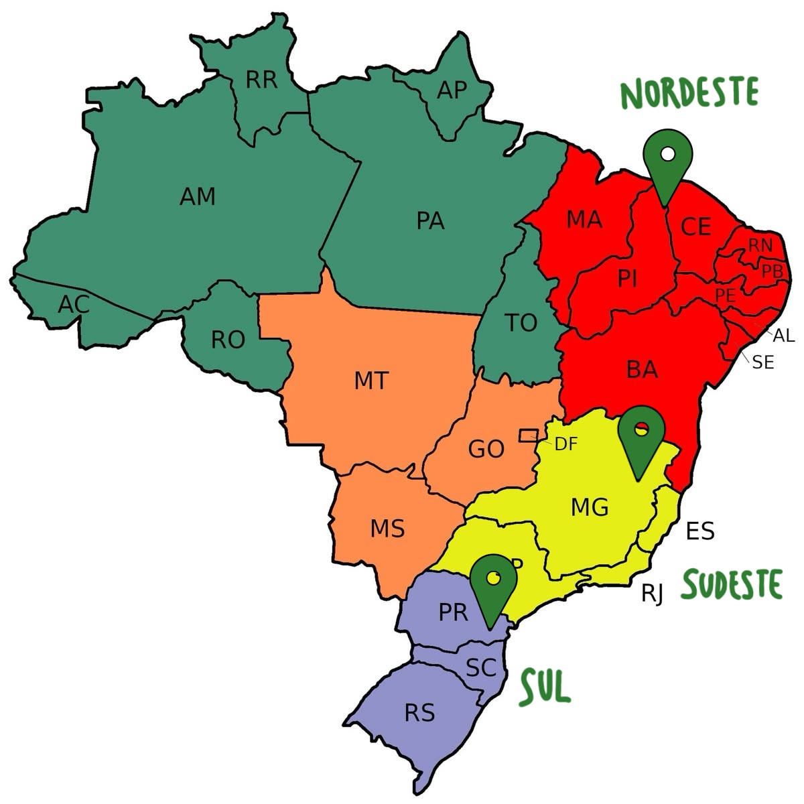

Venha explorar sabores de cada região do Brasil!
O Brasil é um país rico em cultura e diversidade, e isso também se reflete na sua culinária. Explore diferentes regiões e descubra sabores únicos que fazem parte da nossa identidade.
